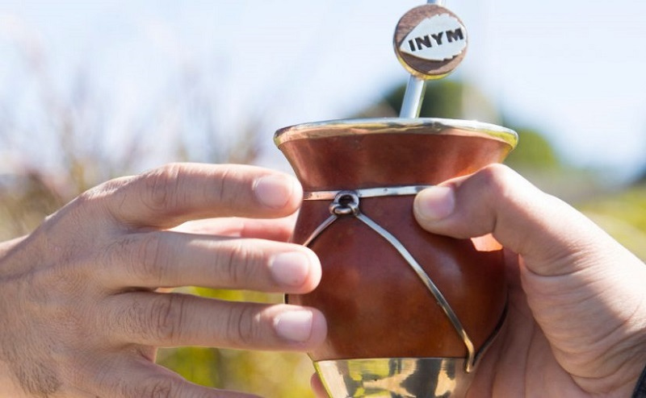

Tu espacio para encontrar el mate perfecto y sus mejores accesorios.
¡Bienvenidos a MatesINK! 🧉
En MatesINK, nos apasiona la tradición del mate y todo lo que lo rodea. Somos un microemprendimiento dedicado a ofrecerte lo mejor en productos relacionados con el mate, desde mates artesanales hasta yerbas de alta calidad y accesorios únicos.
Nuestra misión es brindarte una experiencia auténtica y especial. Seleccionamos cuidadosamente cada producto para garantizar que puedas disfrutar de momentos memorables, ya sea solo o acompañado.
Además, valoramos la conexión con nuestra comunidad. Creemos que el mate es más que una bebida; es un símbolo de amistad, encuentro y tradición. Por eso, trabajamos para fomentar un ambiente donde todos los amantes del mate puedan compartir sus historias y experiencias.
Únete a nuestra comunidad de entusiastas del mate y descubre la armonía perfecta entre sabor, calidad y diseño. ¡Te invitamos a explorar nuestros productos y ser parte de esta hermosa tradición!
“Productos de calidad increíble, el mate clásico es un lujo.” - Carolina Orcellet
“La mejor yerba que probé. Sabor natural y suave. Muy recomendado!” - Diana arroz
“Lo mejor que me paso despues de la vuelta a la democracia, Democracia con la que se vota, pero también democracia con la que se come” - Raul Alfonsin
“La verdad productos frescos y con buen olor, es excelente compro todas las semanas.” - Vanina
La pregunta correcta no es si es Argentino o no, si no de donde es Originario y eso lo vamos a responder en este Post.
Su origen se remonta a los pueblos guaraníes, que utilizaban las hojas del árbol como bebida, objeto de culto y moneda de cambio. Durante las largas travesías por la selva, los conquistadores españoles notaron que los guaraníes tenían mayor resistencia luego de tomar esta bebida sagrada.
Más tarde los jesuitas introdujeron el cultivo en las reducciones y contribuyeron a su difusión y comercialización, al punto tal de que la infusión se hizo conocida entonces como té de los jesuitas.
La yerba orgánica se cultiva sin pesticidas, fertilizantes sintéticos ni químicos. Su producción sigue prácticas agrícolas más naturales y respeta la biodiversidad del entorno.
La yerba común se cultiva con métodos convencionales, que incluyen el uso de pesticidas y fertilizantes. Es la variedad más consumida y está ampliamente disponible en el mercado.
La decisión entre yerba orgánica y común depende de las prioridades del consumidor: si valoras la sustentabilidad y estás dispuesto a pagar más, la yerba orgánica es una gran elección. Si, en cambio, buscas un producto accesible y disfrutas de una amplia variedad, la yerba común podría ser la mejor opción.
¿Queres compartir sobre algun tema en nuestro blog? Contáctanos para compartir tu experiencia!.